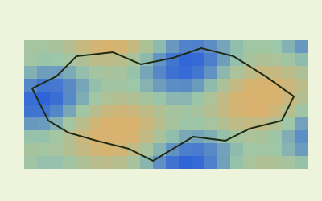
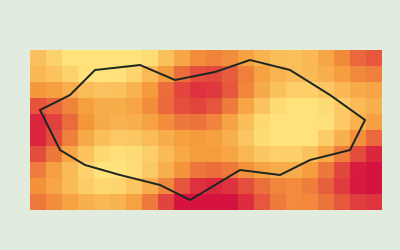
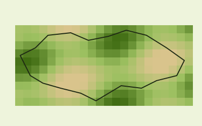
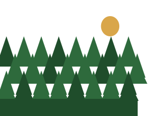
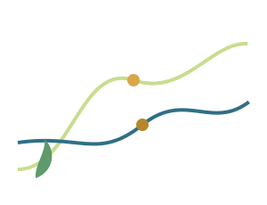
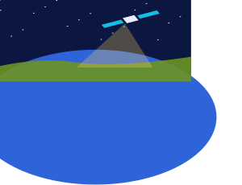
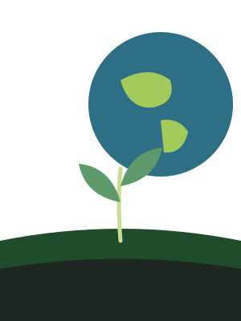

МонографіяНаукові основи формування фітоценозів агроекосистем в умовах змін…
Монографія · 2026
Наукові основи формування фітоценозів агроекосистем в умовах змін клімату
Ткач Є.Д., Шерстобоєва О.В., Стародуб В.І., Бунас А.А.
 КонкурсКонкурс на посаду директора Дослідної станції лікарських рослин (Полтавська область)13.10.2026
КонкурсКонкурс на посаду директора Дослідної станції лікарських рослин (Полтавська область)13.10.2026 КонференціяЗапрошення до Міжнародної науково-практичної конференції «Збалансоване природокористування» — 29–30 жовтня02.10.2026
КонференціяЗапрошення до Міжнародної науково-практичної конференції «Збалансоване природокористування» — 29–30 жовтня02.10.2026 Ювілей75-річчя доктора біологічних наук, професора Алли Іванівни Парфенюк23.09.2026
Ювілей75-річчя доктора біологічних наук, професора Алли Іванівни Парфенюк23.09.2026Нічого не знайдено



Огляд на початок осіннього періоду 2026 р. — оперативна інформація про стан агросфери на основі міжнародних джерел даних. Готує Лабораторія аерокосмічного зондування агросфери.
Зміни у строках за наказом МОН від 04.08.2026 № 1301. Програми 101 «Екологія», 201 «Агрономія», 051 «Економіка».
Умови вступу →Захист дисертаційОголошення про захисти, документи та відгуки. Доктор філософії: 26, екологія: 36, економіка: 17.
Оголошення про захисти →Документи аспірантамНормативна база, форми і бланки, кандидатські іспити.
Нормативна база →Ткач Є.Д., Шерстобоєва О.В., Стародуб В.І., Бунас А.А.

Ковалів О.І. та ін.
Аграрна наука, Київ · 286 с.
Коніщук В.В., Шумигай І.В., Душко П.М., Мартиненко В.В.
ДІА, Київ · 319 с.
Ткач Є.Д., Шерстобоєва О.В., Стародуб В.І., Шавріна В.І., Охріменко С.Г.
ДІА, Київ · 335 с.
Дребот О.І., Олійник Г.Б.
Аграрна наука, Київ · 260 с.
Дребот О.І., Тимочко І.Я.
Аграрна наука, Київ · 304 с.
Чоботько Г.М., Дем’янюк О.С., Райчук Л.А., Швиденко І.К.
НУБіП України, Київ · 350 с.
Дребот О.І., Мельник П.П., Добряк Д.С., Височанська М.Я., Сахарнацька Л.І.
Аграрна наука, Київ
Тараріко О., Ільєнко Т., Кучма Т.; за ред. О. Дребот
Аграрна наука, Київ · 222 с.
Кічігіна О.О., Дем’янюк О.С., Черненко В.А., Гаврилюк Л.В., Цибро Ю.А.
ДІА, Київ · 36 с.
ISSN 2310-4678Науково-практичний рецензований журнал з актуальних проблем екології та природокористування
Сторінка журналу →
ISSN 2077-4893Український науково-теоретичний журнал
Сторінка журналу →